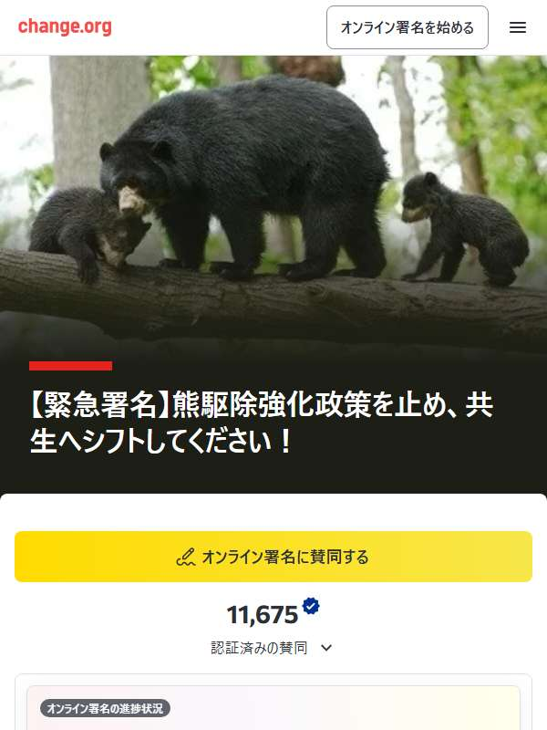

✅ 署名済みメガソーラー・風力change.org
【緊急署名】熊駆除強化政策を止め、共生へシフトしてください！

賛同した人の数11,801 人 （2026年10月20日 確認）前回（10月9日）から +47人
署名ページを見る
change.org（外部サイト）が新しいタブで開きます
「署名した」を押すと、この端末のブラウザの中にだけ記録されます。

署名する前に、確認してね
- 発起人と内容を確認してから下の「どんな署名？」と「基本情報」の発起人を、必ず確認してから署名してください。
- change.org の署名です内容をよく確かめたうえで、ご自身で判断してください。
- 掲載＝賛成・保証ではありませんこの掲示板に載っていても、署名の内容に賛成・保証するものではありません。
- 支援金（お金）は任意です署名のあとにお金の画面が出ても、払わずに署名だけで参加できます。くわしくは署名サイトの違いへ。
📝 どんな署名？
たくさんのご賛同と拡散のご協力をいただき、心からお礼を申し上げます。 熊駆除一択の流れを止めたい！民意を届ける！！ その一点で11/17に日付の変わる直前にこちらの署名をアップいたしました。 当初は500名集まれ！と祈る思いで立ち上げた署名が たくさんの皆さまの多大なご協力を頂き、11/26現在の…
※ 署名ページの本文の書き出しです。全文は署名ページでご確認ください。
📋 基本情報
- 発起人
- Life as One
- 開始日
- 2025年11月16日
- 目標
- 15,000人
- 署名サイト
- change.org
📈 署名数の推移
署名数は当サイトが確認した日の人数です。最新の人数は署名ページでご確認ください。
change.org（外部サイト）が新しいタブで開きます